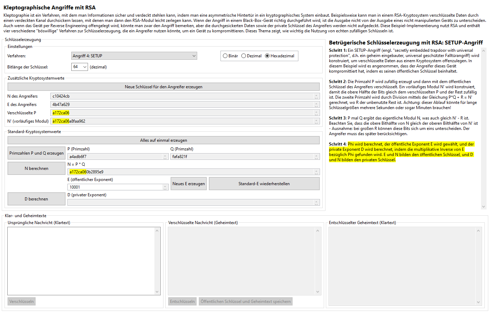
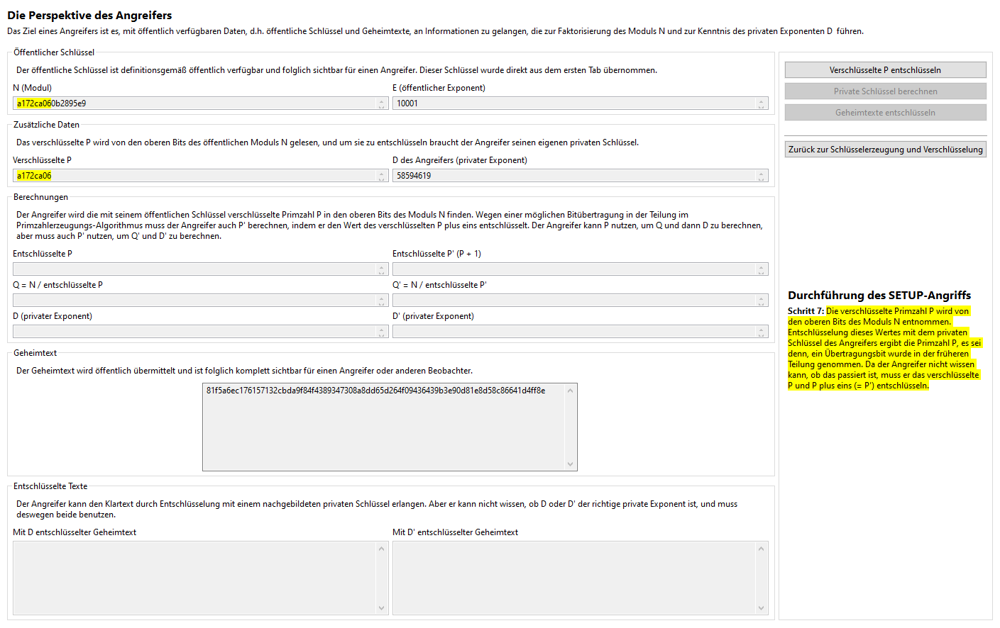
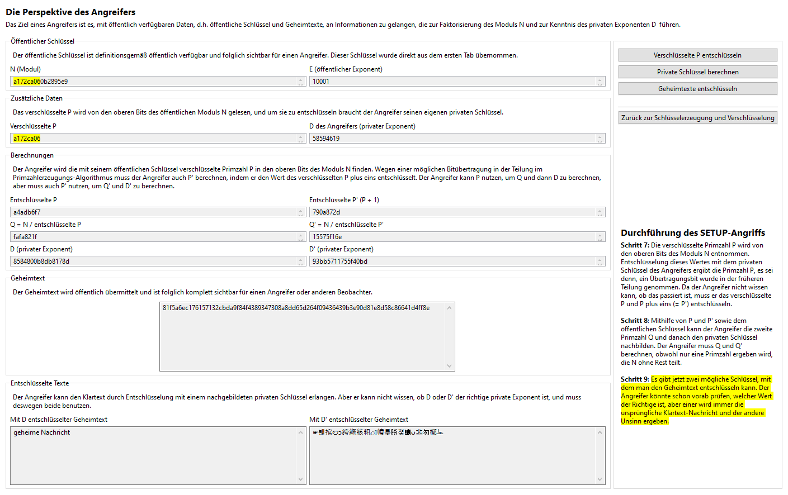

Der geheim eingebaute, universal geschützte Falltürangriff (SETUP-Angriff, genannt nach dem Englischen "secretly embedded trapdoor with universal protection attack") ist der weitaus komplizierteste Angriff in diesem Plug-in, aber auch der sicherste - aus Sicht des Angreifers. Diese Implementierung ist eine modifizierte Version des Angriffs, der im Absatz 11.5 des Buches [YY04] beschrieben wurde. Obwohl der Angriff wie ursprünglich entworfen wäre nicht allzu schwer zu implementieren, wurde diese Version vereinfacht, um den Ablauf verständlicher zu machen.
Die Hauptidee ist, dass der Angreifer seinen öffentlichen Schlüssel in dem kryptografischen Gerät speichert, der dann benutzt wird, die zufällig (unmanipuliert) erzeugte Primzahl P zu verschlüsseln. Der Modul N wird so konstruiert, dass es diesen verschlüsselten Wert enthält, und noch in P und Q zerlegbar ist. Der Angreifer muss dann nur den bestimmten Teil des öffentlich übersendeten Moduls N finden und ihn mit seinem eigenen privaten Schlüssel entschlüsseln, um P zu finden. Danach ist es trivial für den Angreifer, um den entsprechenden privaten Schlüssel nachzubilden.
Die "Sicherheit" dieses Systems ist sehr robust. In einer idealen Implementierung würden die erzeugten Werte völlig zufällig scheinen, und wenn das System korrekt konstruiert wurde, wären die Laufzeiten nicht verdächtigerweise größer als die eines nicht manipulierten Geräts. Auch wenn man per Reverse Engineering das Gerät untersuchen würde, würde er nur den öffentlichen Schlüssel des Angreifers und nichts mehr finden. Mit dieser Kenntnis gewinnt der Beobachter nichts, weil der private Schlüssel immer noch privat ist. Gegen alle Beobachter, auch mithilfe von Reverse Engineering, ist das Gerät noch völlig sicher, mit der einzigen Ausnahme, dass der Angreifer mit dem privaten Schlüssel komplette Kenntnis von allen erzeugten Schlüsselpaaren hat. Die Entdeckung des Angriffs kompromittiert das System nur in Bezug auf den eigentlichen Angreifer: Ansonsten ist es völlig sicher.
In dieser Implementierung erzeugt der Angreifer einen öffentlichen Schlüssel mit der gleichen Länge wie die Primzahl P, d.h. die Hälfte der Länge der Schlüssel, die durch das Gerät erzeugt werden. Da die Primzahlen des Angreifers genau halb so lang sein müssen, muss die Schlüsselbitlänge teilbar durch vier sein. Weiterhin muss die Schlüssellänge von N mindestens 20 Bit sein, damit der Schlüsselraum groß genug ist, um wirksame Schlüssel zu erzeugen. P wird unmanipuliert zufällig erzeugt, und dann verschlüsselt mit dem öffentlichen Schlüssel des Angreifers. Ein vorläufiger Modul N' wird erzeugt, so dass die obere Hälfte der Bits gleich dem verschlüsselten P ist und der Rest zufällig bestimmt wird. Die zweite Primzahl Q wird berechnet, indem N' durch P geteilt und der Rest R ignoriert wird, damit (P * Q) + R = N'. Der echte Modul N wird dann unmanipuliert berechnet, damit P * Q = N = N' - R. Jedoch wird nicht jedes N' durch P teilbar sein, um ein gültiges Q zu erzeugen; deswegen muss dieser Ablauf üblicherweise mehrere Male durchgeführt werden, bevor ein passendes Paar gefunden wird, was bedeutet, dass dieser Prozess extrem langsam sein kann. Wegen der komplizierten Natur dieses Prozesses kann man keine eigenen Primzahlen eingeben.
Eine ideale Implementierung kann viel schneller ausgeführt werden, benötigt aber einen noch komplizierteren Ablauf, besonders seitens des Angreifers. Wenn R groß genug ist, dann ist die obere Hälfte der Bits von N möglicherweise nur um eins kleiner als die obere Hälfte von N' wegen der Bitübertragung sein.
Nachdem P, Q, und N erzeugt worden sind, sind die übrig gebliebene Schritte identisch mit denen der unmanipulierten Schlüsselerzeugung. Der Angreifer muss nur die obere Hälfte der Bits von N (oder dieses Wertes plus eins im Falle einer Bitübertragung) mit seinem privaten Schlüssel entschlüsseln, um die Primzahl P zu erlangen, und danach ist die Berechnung des entsprechenden privaten Schlüssels trivial.
Die Benutzeroberfläche für diesen Angriff ist ein bisschen komplizierter als die anderen. Im ersten Schritt erzeugt man die Schlüssel des Angreifers, von denen der öffentliche Schlüssel (N, E) im Gerät gespeichert und deswegen hier angezeigt wird. Nach der Erzeugung der Primzahlen werden das verschlüsselte P und den vorläufigen Modul N' angezeigt. Wenn man die Anzeige in Binär oder Hexadezimal auswählte, werden nach der Berechnung von N das verschlüsselte P und die obere Hälfte der Bits von N' und N gelb markiert, weil sie gleich sein werden (es sei denn, die obere Hälfte von N ein Bit kleiner ist).

Erzeugung von E und D und Verschlüsselung bzw. Entschlüsselung einer Nachricht läuft normalerweise genauso wie bei unmanipulierter Schlüsselerzeugung ab. Nachdem aber man eine Nachricht verschlüsselt hat (egal ob man den Empfänger simuliert hat und sie mit dem privaten Schlüssel entschlüsselt hat), kann man den Button "Öffentlichen Schlüssel und Geheimtext speichern" klicken, um den Angreifer zu simulieren. Im Gegensatz zu dem festen-P-Angriff muss man nur einen öffentlichen Schlüssel speichern, um den Angriff durchzuführen. Dieser Button bringt man automatisch zu dem "SETUP-Angriff"-Tab:

Der gespeicherte öffentliche Schlüssel und der Geheimtext wurde schon übernommen, und die obere Hälfte der Bits des Moduls N wurde schon ausgeparst, denn wir wissen schon, dass sie der verschlüsselte P sind. Der private Schlüssel des Angreifers wird auch angezeigt. Weil der Angreifer nicht wissen kann, ob eine Bitübertragung in der Schlüsselerzeugung stattgefunden hat, muss er sowohl mit dem verschlüsselten P als auch mit diesem Wert plus eins entschlüsseln. Der Angreifer kann danach die zwei möglichen privaten Schlüssel nachbilden und versuchen, den Geheimtext damit zu entschlüsseln. Es sollte offensichtlich sein, welcher der aufgedeckten Klartexte der richtige ist.

Klicken Sie hier, um zurück zum Kleptographie-Index zu gehen.
[YY04] A. Young, M. Yung, Malicious Cryptography: Exposing Cryptovirology, John Wiley & Sons, 2004.